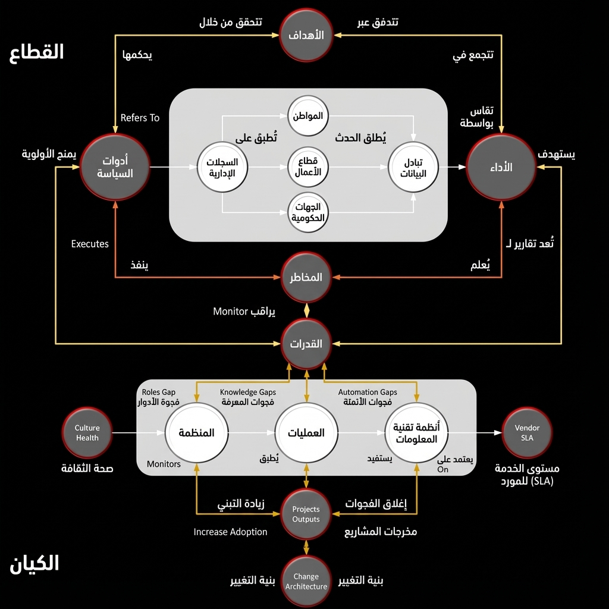
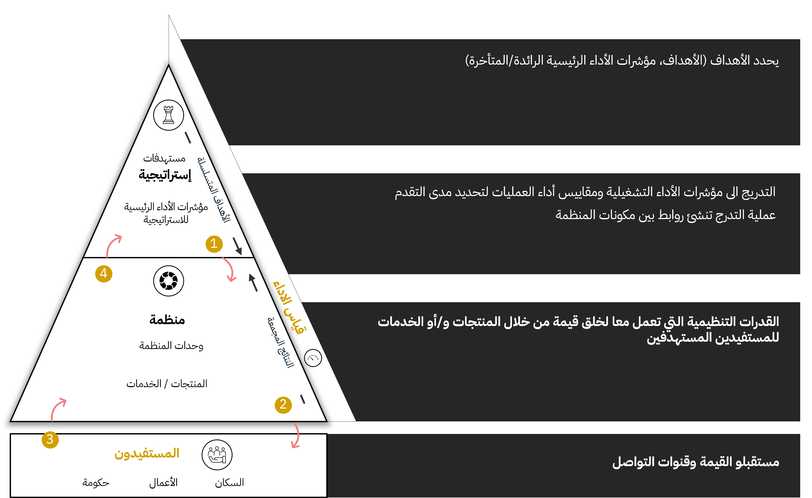
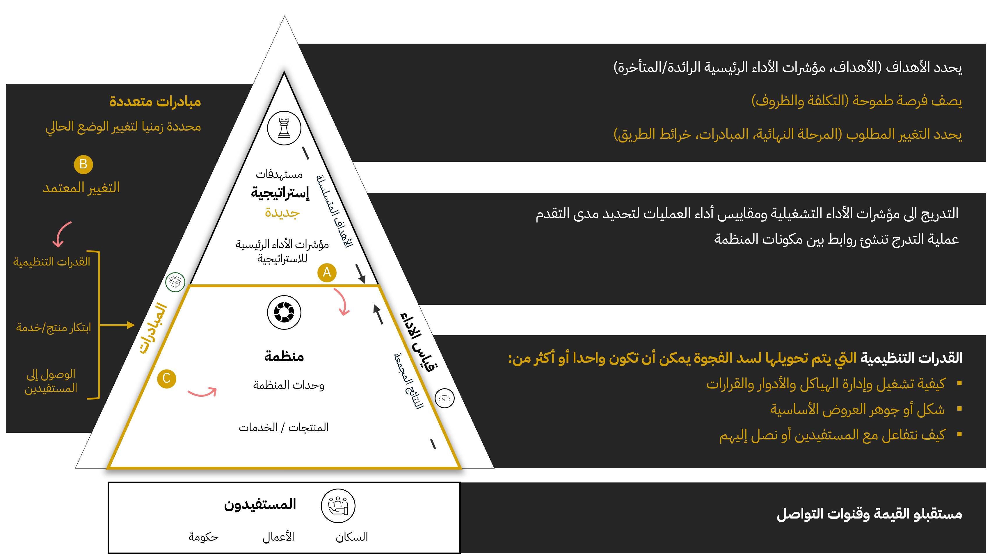

الحلقة 1.1: ما هو التحول التنظيمي؟
مقدمة - تصنيف القطاع العام
تعمل المنظمات، خصوصًا في القطاع العام، كنظم متكاملة تتألف من مكونات مترابطة تولِّد قيمة عبر سلسلة قيمة القطاع. تمثل المخططات التالية العناصر الأساسية وعلاقاتها بين عمليات القطاع وعمليات الكيان.

شكل 1: تصنيف شامل للكيان والقطاع — العقد والعلاقات
تشريح المنظمة
على المستوى الهيكلي، تُصنّف المكونات ذات الصلة كما يلي:
- الاستراتيجية: تحدد الأهداف طويلة الأجل والأولويات التنظيمية، وتُراجع عادةً سنويًا.
- العمليات: تشمل الأشخاص والعمليات والتقنيات والأصول المادية المستخدمة لتنفيذ الاستراتيجية.
- تحديد الأهداف وتوصيل القيمة: تنتقل الأهداف الاستراتيجية إلى الوحدات التشغيلية حيث تُنتَج القيمة للمستفيدين.
- مراقبة الأداء: تُتبع نتائج التنفيذ عبر مقاييس أداء توفر حلقات تغذية راجعة.

شكل 2: المنظمة في وضعها الطبيعي
ما الذي يشكل التحول؟
التحول هو خروج متعمد، وغالبًا مُزعزع، عن الشكل التنظيمي الراسخ.
في التحول الرقمي تصبح التكنولوجيا عنصراً محورياً في تقديم الخدمات وليس مجرد أداة مساعدة.
التحسينات التدريجية قد تحسّن الكفاءة لكنها لا تُعد تحوّلاً جوهريًا.

شكل 3: المنظمة أثناء التحول
الظروف المحيطة بالتحول
يصبح التحول ضروريًا عندما تكون الأنظمة والعمليات والقدرات الحالية غير كافية لتحقيق الطموحات الاستراتيجية الجديدة.
أ. الطموح الاستراتيجي يتجاوز القدرة التشغيلية
فرص أو تفويضات جديدة تتطلب قدرات لا يمكن للنموذج الحالي توفيرها.
ب. التغيير معتمد وممول
يُعتمد التحول رسميًا مع تخصيص الموارد المالية والبشرية.
ج. إعادة هندسة خلق القيمة المؤسسية
تعمل المبادرات على إعادة تشكيل آليات خلق القيمة داخل المنظمة.
في سياق القطاع العام غالبًا ما تكون محركات التحول:
- إصلاحات نظامية تتطلب تغييرات تشريعية والحوكمة.
- ارتفاع توقعات المواطنين الذي يستلزم تحسينات جوهرية في تقديم الخدمات.
نمط شائع للتحول: من العمليات إلى الاستراتيجية
الانتقال يتطلب بناء أساس لنوع مختلف من المنظمات.
| العامل المساعد | الوصف |
|---|
| الوضوح التشريعي | تفويض يفصل الأدوار التشغيلية عن الوظائف الاستراتيجية |
| إصلاحات الحوكمة | مجالس مستقلة وشفافية في اتخاذ القرار |
| بناء القدرات | التخطيط الاستراتيجي، التحليل، والقدرات الرقمية |
| البنية التحتية الرقمية | أساس للانتقال من التنفيذ إلى تنظيم قائم على الرؤى |
| مشاركة أصحاب المصلحة | شراكات رسمية وآليات مشاورة عامة |
| إعادة تعريف المقاييس | الانتقال من مقاييس المخرجات إلى مقاييس التأثير وصحة النظام البيئي |
مثال تطبيقي: إصلاح هيكلي لوزارة
الوضع قبل التحول (عمل كالمعتاد):
- الأهداف الاستراتيجية تركز على مكاسب هامشية.
- إعادة استخدام الخطط السابقة مع تعديلات بسيطة.
- يسيطر سير العمل التشغيلي على التركيز المؤسسي.
- مقترحات التغيير تواجه مقاومة ثقافية وإجرائية.
الوضع بعد التحول:
- تُقدَّم أهدافًا ثورية مربوطة بتأثير أوسع.
- يُخضع التخطيط لمعايير مساءلة جديدة.
- تُنشأ هياكل حوكمة للمشاريع لتنسيق مبادرات التحول.
- تصبح إدارة التغيير وظيفة مركزية مع مراقبة دورية.
النقاط الرئيسية
- التحول استجابة هيكلية لطموح يتجاوز القدرات الحالية.
- يتطلب إعادة تصميم شاملة وليس مجرد ترقيات رقمية.
- النجاح يتطلب إعادة تكوين الأدوار والحوكمة وسلاسل القيمة.
- الأطر القديمة مقاومة للأهداف الجذرية؛ النتائج الجديدة تتطلب نماذج تشغيلية جديدة.